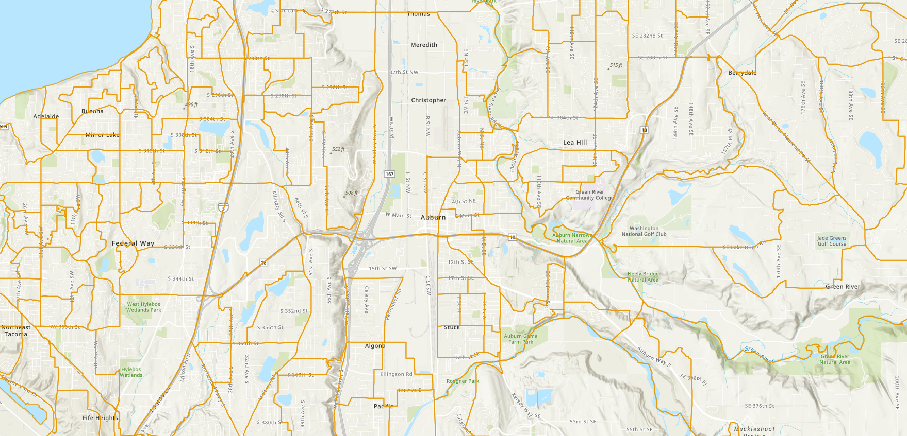
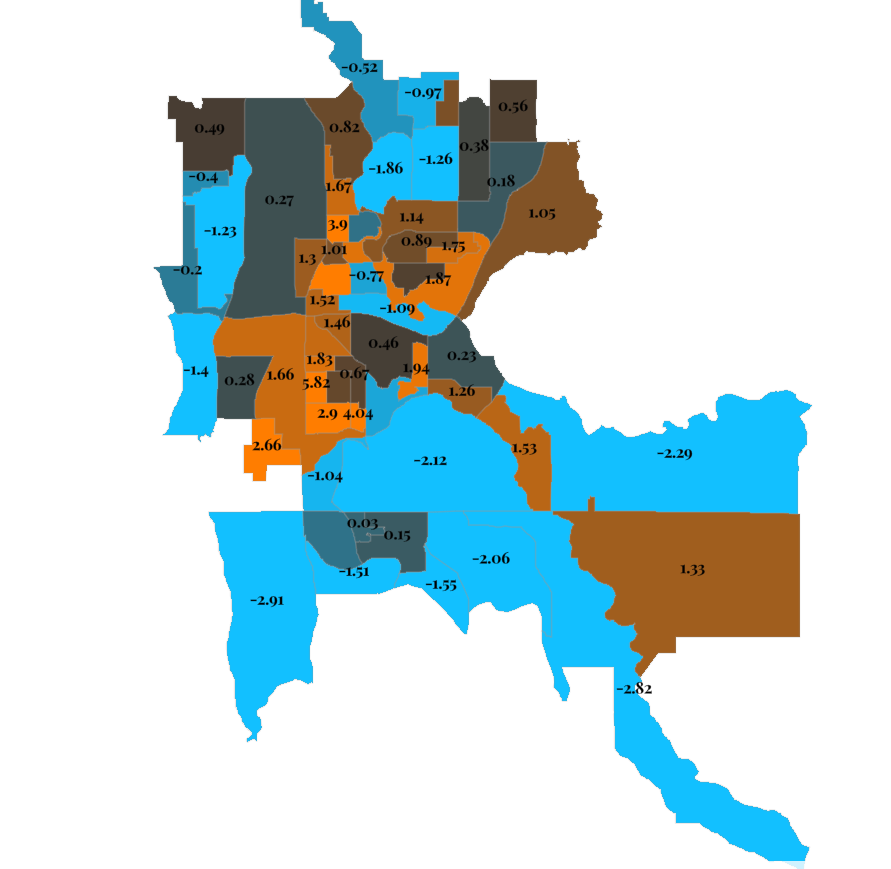
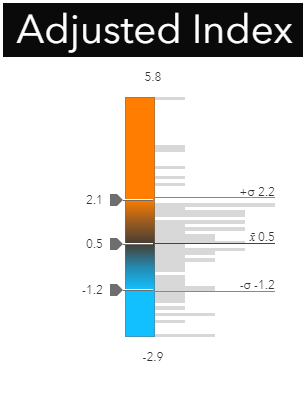

In the sections below we will review ESJ-Geo results and how to interpret them.
Geographies:
Census Block Groups are the evaluated areas in ESJ-Geo. Block Groups are statistical divisions of census tracts and are generally defined to contain between 600 and 3,000 people. Block Groups were selected due to the fact that they are the smallest geographies avaiable that include demographic data.

Normalization:
Each variable used in ESJ-Geo is standardized using a statistical normalization in the form of a standard score (z-score)

Final Adjusted Index:
Each standard score is them multiplied by the user defined weight. A user defined weight of 0 results in the variable not participating in the final Adjusted Index. The Final Adjusted Index is the Sum of all the standard scores times their given weights. This Final Adjusted Index is then evaluated based on how a Block Group differs from the mean value of the Adjusted Index of all the participating Block Groups. The Block Groups whos Final Adjusted Index that is more positive and greater than one standard deviation from the mean, is considered to be statistically significantly more vulnerable than those who have a lower Final Adjusted Index. The Block Groups whos Final Adjusted Index that is more positive and a larger difference than the mean than one standard deviation, is considered to be statistically significantly more vulnerable than those who have a lower Final Adjusted Index.

Click below to view results for your community!